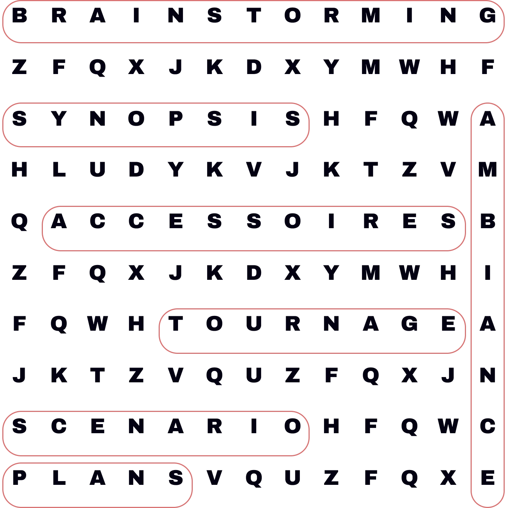

J'en fais depuis toujours. Aujourd'hui, je veux aller plus loin et tourner comme au cinéma.
Depuis toujours
D'où ça vient
La vidéo, j'en fais depuis toujours. C'est ce qui m'a donné envie de créer.
Mon objectif
Ma mission
Je veux exceller dans ce domaine, et passer de vidéos sympas à des vidéos au vrai rendu cinéma.
En ce moment
J'apprends
J'apprends à tourner en format cinéma, à bien régler ma caméra et à mieux gérer la lumière.
